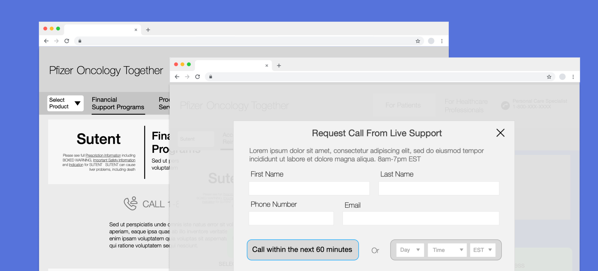
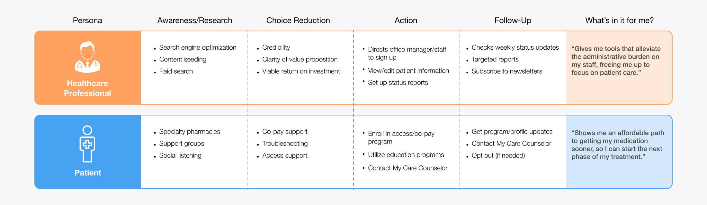
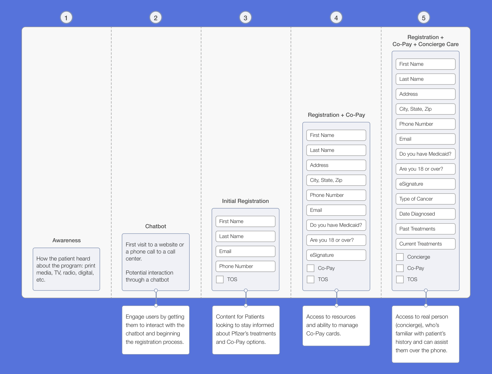
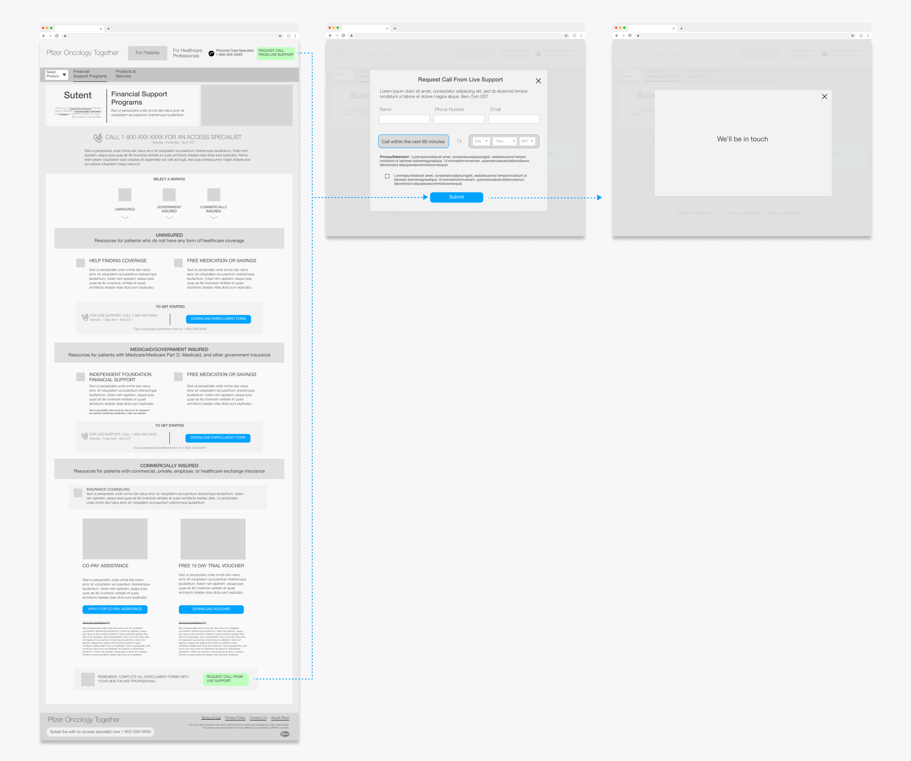
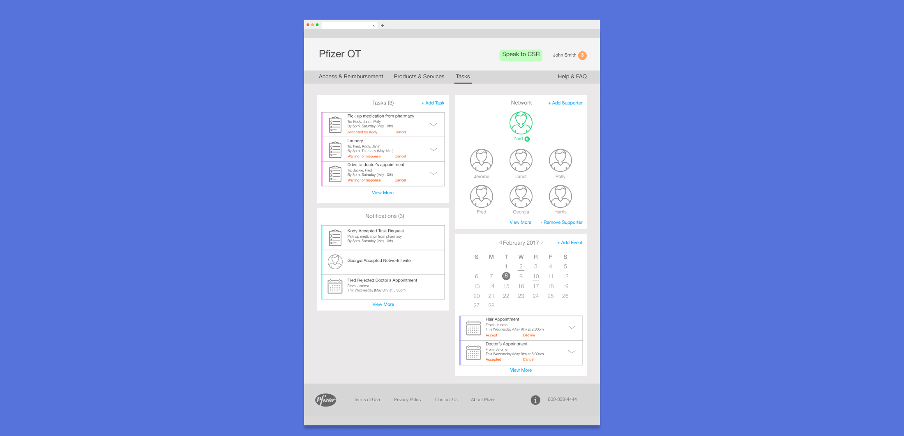
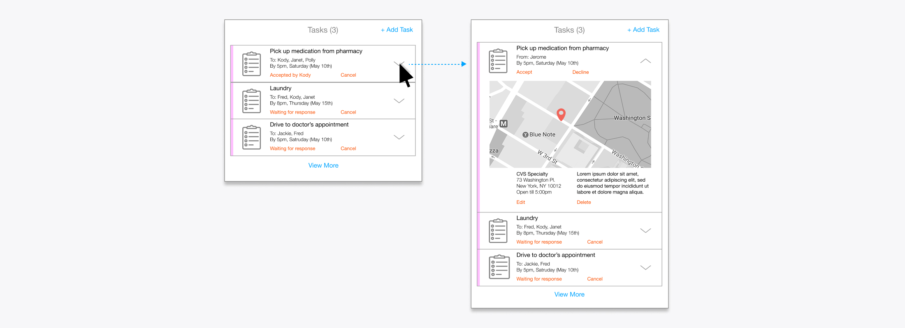
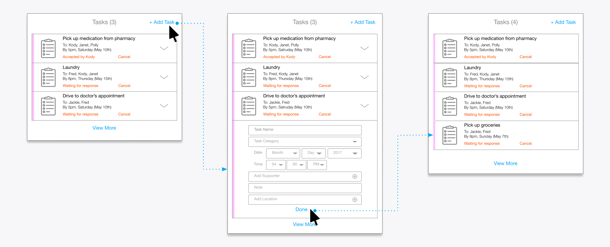
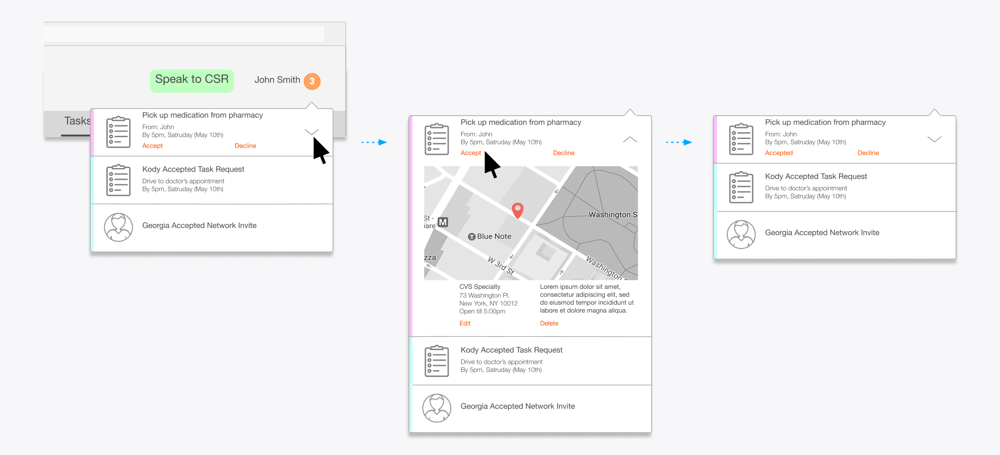

Pfizer Oncology Together
With a progressive registration approach, Pfizer increased sign-ups to an online portal providing patients and caregivers with access to financial support and help with day to day tasks

Problem
Pfizer needed an online presence for Pfizer Oncology Together, a program that connects patients with dedicated counselors who provide phone-based support for financial assistance, emotional support, and practical resources such as transportation and lodging for out-of-town treatment.
Solution
I created a website that educated users about the program and increased sign-ups with a progressive registration approach, as well as an online portal that allowed patients to connect with nearby family and friends to complete day-to-day tasks like prescription pick-ups and rides to appointments.
Role
UX Designer
Timeframe
6 months
Skills
Wireframes, User Research, Cross-Functional Leadership
Pfizer launched Pfizer Oncology Together to provide patients with access to dedicated counselors, who would assist them over the phone with finding resources for financial assistance, emotional support, and other day-to-day challenges of having cancer, such as finding transportation or lodging when receiving out of town treatment. They wanted to create an online presence in two phases;
Phase One - A website that would serve two goals: (1) Educate patients, caregivers, and healthcare professionals on the benefits and services provided by the program and (2) Provide multiple ways to simply and quickly sign up.
Phase Two - An online portal that would enable patients to reach out to their friends and family for assistance with day to day tasks that can be made difficult during treatment, such as coordinating rides to doctor's appointments or asking for help with picking up groceries.
Understanding users
The user base for this site was varied, as it contained oncology patients (along with their caregivers), as well as healthcare providers (doctors, office managers and specialty pharmacists). I started off by developing personas and high level customer journeys for each of these groups.

Sample of Customer Journeys
It was clear from our research and analysis that the common thread among all user groups was that they needed to be able to access information quickly and reliably, either because they were in a stressful situation (patients/caregivers) or because they had limited time (healthcare professionals). This meant that the site needed a sign-up system that was quick and flexible to the needs of different users. As a result, I focused on progressive registration and giving user multiple ways to sign up.
Ease patients into the program with a progressive registration approach
Initially, the client approached user registration as an all-or-nothing process. Patients had to complete a lengthy form—including personal contact details and specifics about their cancer diagnosis and treatment—to access any program features, from simple informational emails to a personal telephone concierge. We quickly realized this would create a significant barrier to entry, discouraging many users from signing up at all.
To address this, I designed a progressive registration system that allowed users to engage at their own comfort level, providing only the information necessary for the features they wanted. The system offered three tiers of participation:
- Initial Registration - Access to periodic emails with treatment tips and financial support options.
- Registration + Co-Pay Card - Access to resources and ability to manage co-pay cards.
- Concierge Care - Access to a concierge who’s familiar with patient’s history and can assist them over the phone.

Progressive Registration Flow - As users increased their engagement with the program, they would need to provide more information about their coverage and past treatments.
Allow users to schedule a phone call to register
In addition to web sign-up, we offered a toll-free phone number that users could call so that they could ask any questions they wanted before joining the program. Representatives would then be able to sign them up over the phone. However, calling customer support creates extra friction for users, as they might be wary of having to wait on hold for an unknown amount of time. To ease this concern, we created a third option. Prominently displayed in the header of every page, a callout invited users to request a call from a representative in as little as an hour simply by providing their name and telephone number. This provided user’s with the ease of web sign-up, while providing the comfort of being taken care of by a live representative.

Request a Phone Call - Callouts in both the header and the bottom of the page offered users the chance to schedule a phone call with live support to register for the program over the phone.
Phase Two - Task Portal
For the next step, we were asked to create an online portal that would be an extension of Pfizer's phone-based "Care Counselor" program, which used trained counselors to help patients with completing day to day tasks. The portal would be an online community for oncology patients and their family and friends (known as supporters). Patients would be able to reach out to their network of supporters for help with day to day tasks, such as getting rides to doctor's appointments or help with picking up groceries. Supporters would receive notifications for each request and be able to respond, letting the patient know immediately. The entire community would be informed about what needed to be taken care of, ensuring that nothing fell through the cracks.
Portal Hub
The “Tasks” page is the hub of the experience, where a user can see at a glance the members of their network, all of the tasks that need to be completed, future appointments and new notifications. Content was organized into cards system, which provided flexibility in how much information could be provided and allowed users to take actions without having to leave the page. If a patient wanted to add another friend to their network or if a supporter wanted to accept a task, they could do so with a single click.

Portal Hub - With a glance, users could get an overview of their supporter network and tasks and notifications.

Expandable Cards - Each of the individual cards has a minimized and expanded state, allowing users to view additional information, such as a specific location or notes on what needs to be done, with a single click.
Adding & Accepting Tasks
Users can add a task that they need help with right from the portal screen. Clicking “Add Task” expands the card to display a form where the user can input all the necessary information. Once completed, a message is sent via email or text message to all the mentioned “supporters”.

Adding a Task - A patient can add a task they need help with directly from the portal hub.
Supporters can accept a task by either responding to the message request or through the online portal. When they visit the portal, there will be a notification.
When they visit the portal, there will be a notification badge in the upper right corner, which will alert you to personal activity as well as activity thoughout the network. In the example below, our supporter has notifications for task requests from their patient, but also notifications showing that other supporters have accepted open tasks or joined the network.

Accepting Tasks - A notification badge will alet supporters to for task requests from their patient. They can expand the notification to get more details and accept or decline the task from an inline link.
Results
Phase one of the site was launched, allowing users to sign up for the program and download co-pay cards. The site was well received by users and is still running today. Phase two of the project never made it past the design stage, due to budgetary constraints and feature overlap with another project that Pfizer was working on concurrently.